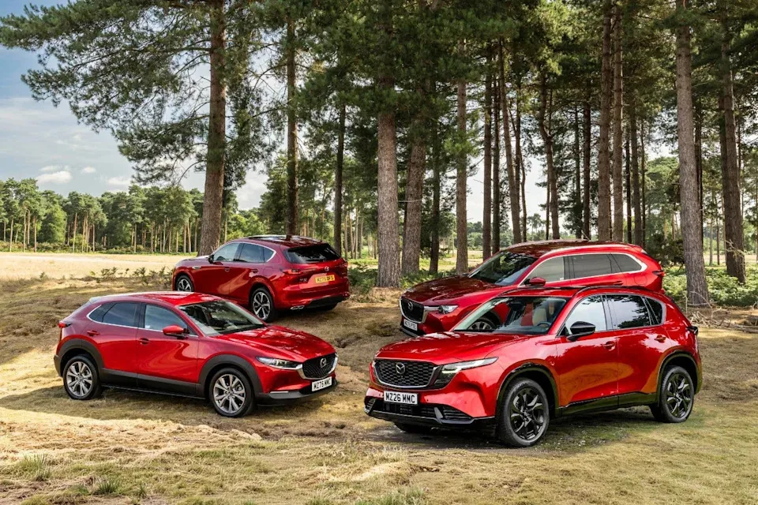
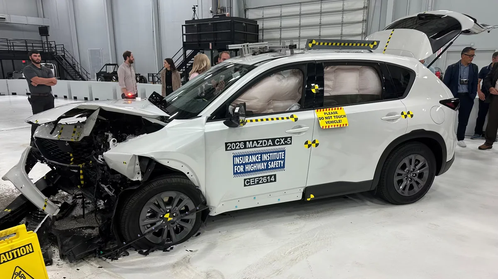
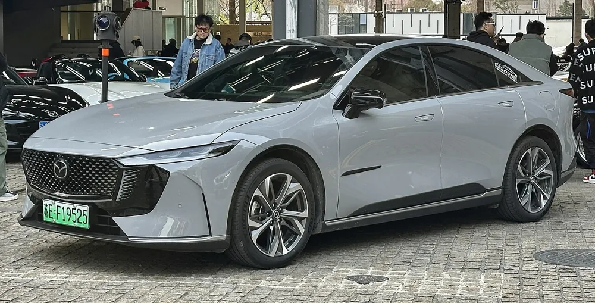

Servis za vašu Mazdu.
Neovlašćeni Mazda servis u Beogradu od 2012. Redovno održavanje, dijagnostika i remont motora, uz pisani izveštaj o stanju vozila posle svake intervencije.
- 26 godinaradimo samo Mazda vozila
- 2000+ klijenatakoji se vraćaju redovno
- Najkvalitetniji delovii komponente renomiranih proizvođača
Jedna marka, dvadeset šest godina iskustva.
Mazdu znamo do poslednjeg šrafa. Od Mazde 2 do najnovijih CX modela, radimo na njima svakog dana.
Naši mehaničari imaju višedecenijsko iskustvo u radu sa Mazdinim vozilima u ovlašćenom servisu, a od 2012. godine otvaramo samostalni neovlašćeni Mazda servis. Održavamo pojedinačna vozila i vozne parkove.
Šta radimo
Posle svake intervencije dobijate izveštaj: šta je urađeno, šta smo primetili i šta preporučujemo za sledeći servis.
Redovan servis
Mali i veliki servis po Mazda intervalima: ulje, filteri, svećice, tečnosti i provera svih sklopova.
DetaljiKompjuterska dijagnostika
Namenska originalna Mazda dijagnostika sa Mazdinim on-line softverom.
DetaljiPregled pre kupovine
Kupujete polovnu Mazdu? Proveravamo motor, pogon, trap, kočnice i elektriku pre nego što platite.
DetaljiGeneralni remont motora
Kompletan remont sa proverom svih pomoćnih agregata. Na urađen remont dajemo garanciju.
Detalji
Kako izgleda servis kod nas
Bez iznenađenja na računu. Svaki dodatni rad dogovaramo sa vama pre nego što počnemo.
Zakazivanje
Pozovite ili pošaljite upit. Dogovaramo termin koji vam odgovara.
Prijem vozila
Zapisujemo kilometražu, simptome i šta želite da uradimo.
Dijagnostika
Proveravamo vozilo i javljamo vam nalaz i procenu troška.
Rad
Radimo samo ono što ste odobrili, sa proverenim delovima.
Predaja i izveštaj
Preuzimate auto uz izveštaj i preporuke za sledeći servis.
Naš servisni tim
Sertifikovani Mazda mehaničari koji će raditi na vašem vozilu.
Borko Dimitrijević
Vlasnik i šef servisa, automehaničar, dijagnostika, elektrika
2000–2013. Profil International; od 2012. East Auto Servis
Jovan Dodić
Automehaničar, dijagnostika, elektrika
2012–2019. Tehnički pregled „Sunce”; od 2019. East Auto Servis
Goran Kukulj
Automehaničar, dijagnostika, elektrika
1997–2005. Samostalni autoservis; 2005–2013. Profil International; od 2013. East Auto Servis
Zoran Pavlović
Automehaničar, dijagnostika, elektrika
1997–2016. Ovlašćeni Volvo servis „Dragan”; od 2016. East Auto Servis
{kind=link}
{kind=link}
{kind=link}
{kind=link}
{kind=link}
{kind=link}
{kind=link}
Mazda svet
Najnovije vesti iz sveta Mazde.
-

Septembar 2026.Mazda: još nije vreme za potpuno električnu ponudu
Mazda poručuje da motori sa unutrašnjim sagorevanjem ostaju važni i da ide „višestrukim rešenjima“ umesto naglog prelaska na struju.
Pročitajte više -

Jul 2026.Nova Mazda CX-5 osvojila najviše IIHS priznanje za bezbednost
Potpuno nova CX-5 dobila je IIHS TOP SAFETY PICK+ nagradu; Mazda treću godinu zaredom predvodi industriju po bezbednosti.
Pročitajte više -

April 2026.Mazda 6e — svetski dizajn godine 2026
Mazda 6e (u Kini EZ-6) osvojila je prestižnu nagradu World Car Design of the Year za 2026.
Pročitajte više
Iz radionice
Zakažite termin
064 144 63 43- Radno vreme
- Ponedeljak–petak 09–17 h, vikendom ne radimo